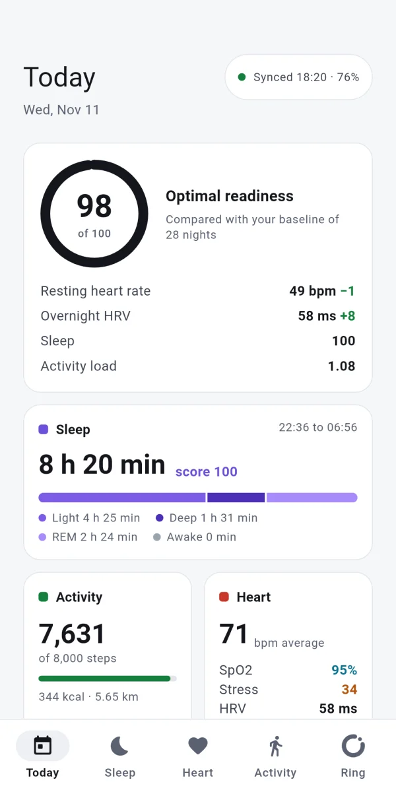
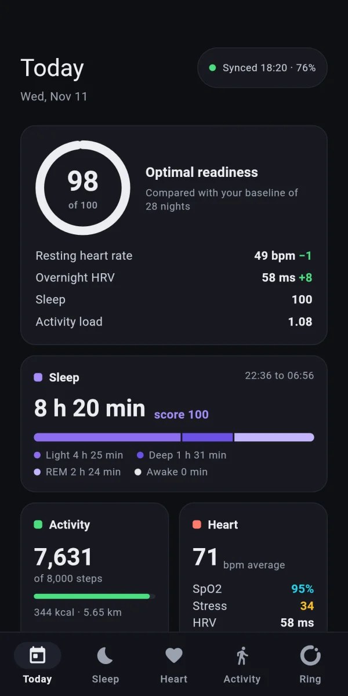

Sleep as a hypnogram
Light, deep, REM and awake on a timeline, and a night with a wake-up is still one night.
22:368 h 20 min asleep06:56
Sleep, heart, activity and GPS workouts from the COLMI R09, kept on your phone. They go to Health Connect only if you want them to.
There is no iPhone version yet.


One colour per metric family, the same on every screen: violet is sleep, coral is heart, green is activity, cyan is oxygen, amber is stress.
Light, deep, REM and awake on a timeline, and a night with a wake-up is still one night.
Heart rate through the day, HRV, SpO2 and stress, read from the ring and kept on your phone.
A score from 0 to 100 that says how much each input added, against your own baseline.
The phone keeps the clock, the ring sends live heart rate and, outdoors, the GPS records route, pace and splits, which you export as GPX.
Readiness, a summary of the day, the ring battery and a shortcut to start a workout, refreshed on every sync.
Every sample can go to Health Connect, workouts with their route included, for the apps you choose.
Readiness adds four inputs with fixed weights: sleep is worth up to 35 points, HRV up to 30, resting heart rate up to 20 and activity load up to 15. HRV and resting heart rate are compared with your own baseline, not other people's averages.
The formula behind every score, with its weights and ranges, is published with the code. Tap any score in the app to see that day's inputs.
OpenRing needs no cloud to work. Data leaves the phone only when you send it.
Everything is kept in a local database on your phone, not on a server of ours.
No sign-up, no login, no email. Pair the ring and start.
The app sends no usage, taps or metrics. The internet is used only to fetch the app's own updates.
CSV and JSON of everything, GPX of workouts, and Health Connect only with your permission.
The ring keeps its own history; the phone connects now and then, pulls what is new and disconnects, which saves both batteries.
The connection stays open only during a live workout. Every 60 minutes by default.
The first release was built and checked with a COLMI R09. The other models are listed by what is known about them today.
| Model | Status | What it means |
|---|---|---|
| COLMI R09 | Tested | The only ring on the bench. Every protocol check is made on it. |
| COLMI R02, R03, R06, R10 | May work | They use the same protocol but have not been tested yet. |
| Other brands | Need hardware | The driver interface is ready. Support lands when one of those rings is on the bench. |
No. There is no sign-up, login or email. Open the app, pair the ring and start.
Not yet. For now OpenRing is for Android 9 or later.
No. It stays in a local database on your phone. It leaves only when you allow it: to Health Connect, or in a CSV, JSON or GPX file you export. The details are in the privacy policy.
Not at the same time. The ring talks to one app at a time, so disconnect it from the original app before pairing it with OpenRing.
Yes. The code is open under the MIT license, with no subscription and no ads.